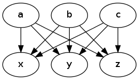

Homework 8
Table of Contents
Task 1 (25 pts)
Refer to the Bayesian inference notes.
- Compute \(P(fire=T|smoke=T)\).
- Compute \(P(alarm=T|smoke=T)\).
- Compute the probability that there is a fire if somebody reports it and you are certain the fire alarm has not been tampered with.
Task 2 (25 pts)
Using the näive Bayesian assumption, calculate the most likely explanation (i.e., which of \(a\), \(b\), or \(c\) is true) given that the following has been observed: \(x=false\), \(y=true\), \(z=true\).
Recall that the näive Bayesian assumption says that \(x\), \(y\), \(z\) are independent of each other given the cause \(a\), \(b\), or \(c\). In other words, \(P(x,y,z|a)=P(x|a)P(y|a)P(z|a)\) (for \(b\) and \(c\) also).

- \(P(x=true|a=true) = 0.1\)
- \(P(x=true|b=true) = 0.3\)
- \(P(x=true|c=true) = 0.7\)
- \(P(y=true|a=true) = 0.3\)
- \(P(y=true|b=true) = 0.5\)
- \(P(y=true|c=true) = 0.8\)
- \(P(z=true|a=true) = 0.6\)
- \(P(z=true|b=true) = 0.4\)
- \(P(z=true|c=true) = 0.6\)
- \(P(a) = 0.3\)
- \(P(b) = 0.7\)
- \(P(c) = 0.5\)
Task 3 (10 pts)
Write binary vectors and frequency vectors for the following documents:
Document 1: "the cat in the hat seuss the cat hat hat seuss the hat"
Document 2: "green eggs and ham seuss the ham green and the ham and"
Document 3: "horton hears who seuss and in the horton the who hears"
Task 4 (10 pts)
Compute (by hand) the tf-idf scores for each of the words in the documents from Task 3.
Task 5 (30 pts)
Report the best (in terms of average F-score) classification algorithm and feature vector pairing for the sms-spam.arff dataset. Use Weka to do this. Be sure to try:
- k-nearest neighbor with \(k=1,2,3\) and,
- Binary feature vectors
- Frequency feature vectors
- tf-idf feature vectors
- Naïve Bayes with binary feature vectors
Use 10-fold cross-validation.